本次分享分两大部分：前半段是二季度宏观与市场观点（关税、产能、利润、资金流、风格轮动、消费），后半段是"超额收益的一些基本策略"——用大量数据讲清楚为什么普通人投资难、以及理论上的最优解是什么。
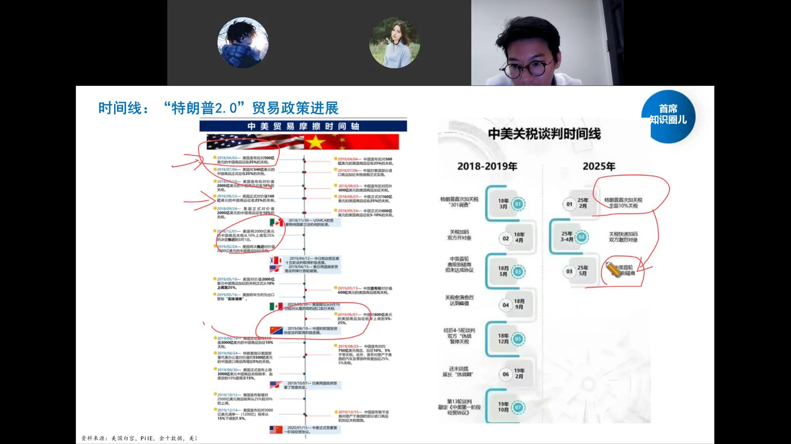
把2018-2019贸易摩擦和2025年对比：2025年2月特朗普首次加征10%全面关税，3-4月关税快速加码、双方激烈对垒，5月中美首轮高级别磋商。节奏比2018年快得多，但路径高度相似。
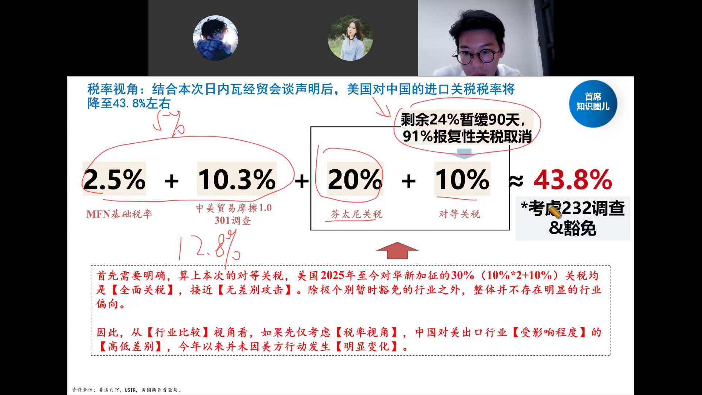
日内瓦经贸会谈声明后，剩余24%暂缓90天、91%报复性关税取消。当前对华实际进口关税拆为四块：MFN基础税率2.5% + 2018年301调查10.3% + 芬太尼关税20% + 对等关税10%，合计约43.8%。
关键判断：2025年至今新征的30%关税都是"全面关税"，接近"无差别攻击"，除个别豁免行业外，整体并不存在明显行业偏向。行业间税率分化主要来自白宫豁免商品占比。
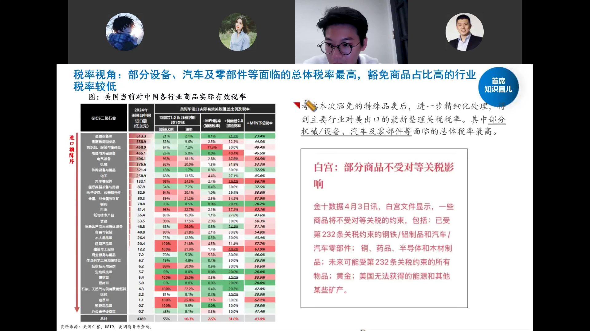
考虑豁免特殊品类后精细化测算：部分机械/设备、汽车及零部件面临的总体税率最高（汽车零部件66.1%、汽车62.1%、建筑工程63.9%）；而白宫豁免的钢铁/铝制品、汽车零部件、铜、药品、半导体、木材、黄金、能源矿产等，实际税率较低。
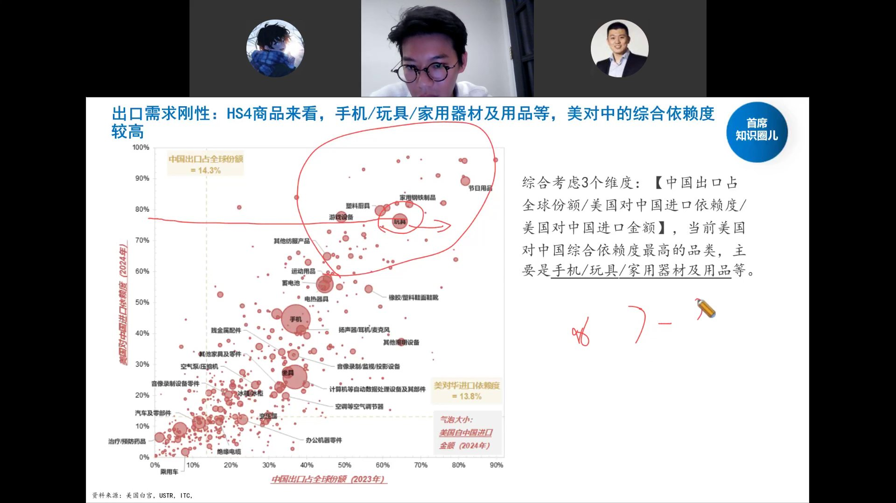
综合三个维度：中国出口占全球份额、美国对中国进口依赖度、美国对中国进口金额。当前美国对中国综合依赖度最高的品类主要是手机、玩具、家用器材及用品——这些品类中国占全球份额高、美国短期难替代，即使加税也难快速转移供应链。
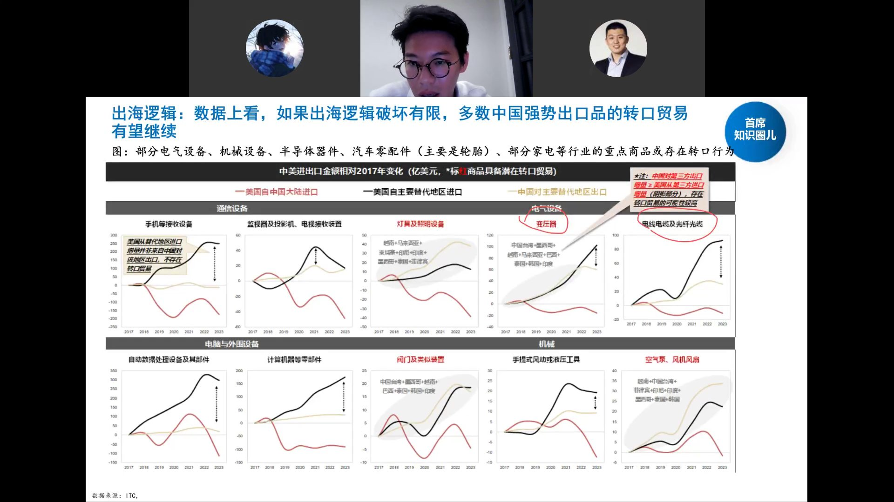
数据上看，如果出海逻辑破坏有限，多数中国强势出口品的转口贸易有望继续。部分电气设备、机械设备、半导体器件、汽车零配件（轮胎）、家电存在潜在转口贸易行为：中国对第三方出口增量＞美国从第三方进口增量，说明存在经东南亚/墨西哥等地转口的空间。
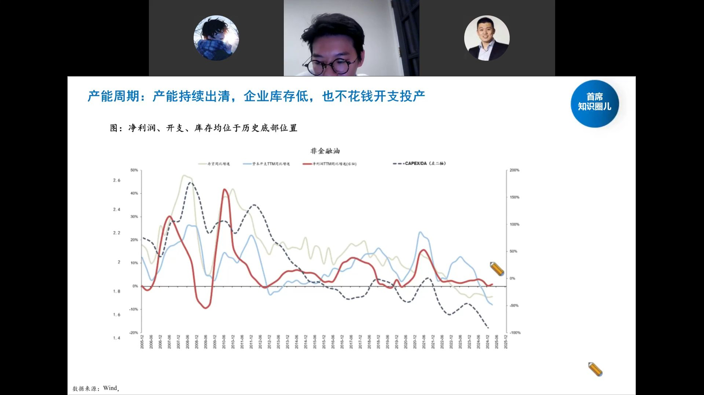
净利润、开支、库存均位于历史底部位置。企业既不在花钱扩产（Capex/DA持续下行），库存也很低。供给端持续出清意味着一旦需求回暖，传统行业的价格弹性和盈利弹性会很大。
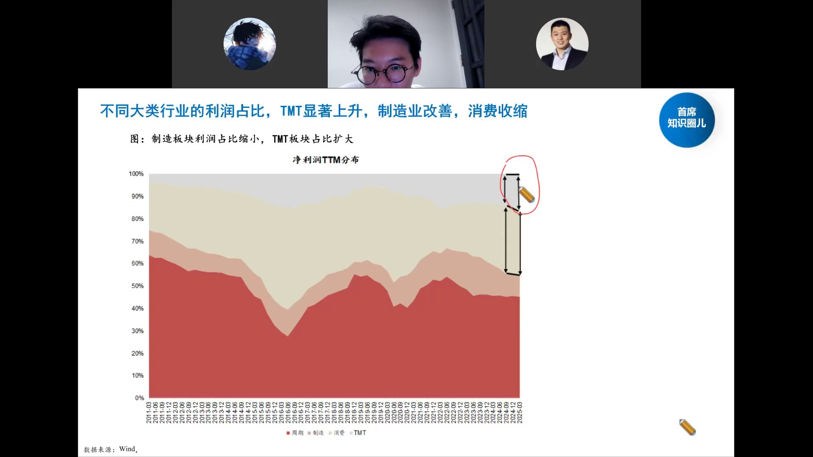
利润的产业迁移：TMT板块利润占比持续扩大，制造板块改善，消费板块收缩。这解释了为什么资金持续拥抱科技——不只是主题炒作，而是利润确实在向TMT集中。
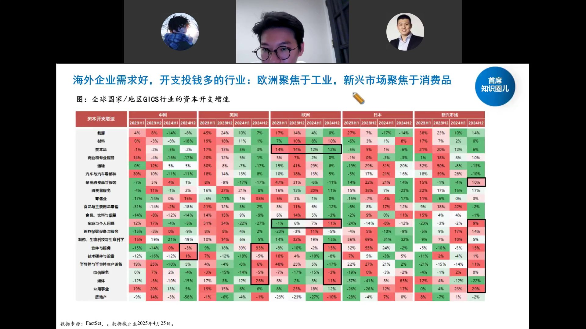
对比全球各区域资本开支：欧洲聚焦工业（资本品、原材料、公用事业开支高增），新兴市场聚焦消费品（零售、食品饮料、家庭用品开支高增）。这为中国企业出海对应的方向提供了线索。
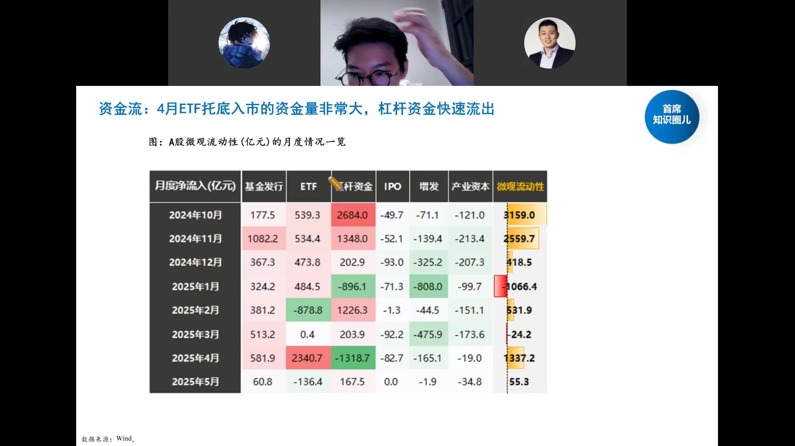
4月微观流动性+1337亿，其中ETF净流入2340亿托底，但杠杆资金（两融）流出1318.7亿。这是典型的"托底资金进场、杠杆资金撤离"结构——国家队/被动资金在托底，但场内杠杆资金在撤退，市场处于弱势平衡。
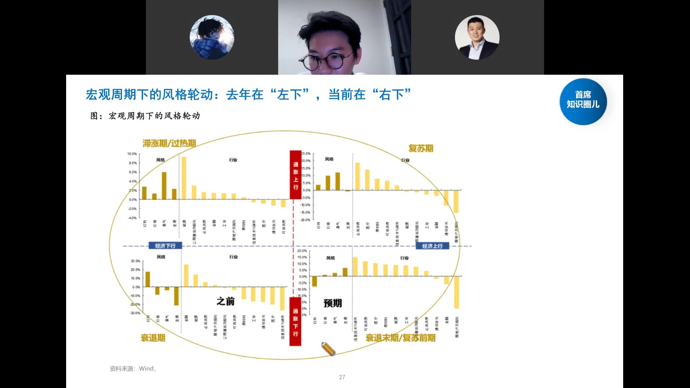
按宏观周期四象限定位：去年在"左下"（衰退期、通缩下行），当前在"右下"（衰退末期/复苏前期、通胀开始回升）。在这个位置历史复盘显示：小盘成长风格开始占优，红利/价值开始跑输，对应2019H2、2017、2020H2等阶段。
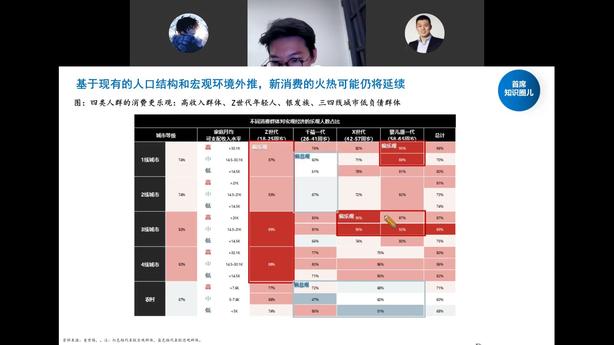
四类人群消费更乐观：高收入群体、Z世代年轻人、银发族、三四线城市低负债群体。这也是"新消费"品牌（奶茶、潮玩、运动服饰、国货美妆）持续火热的人群基础——只要人口结构不发生突变，这一趋势仍将延续。
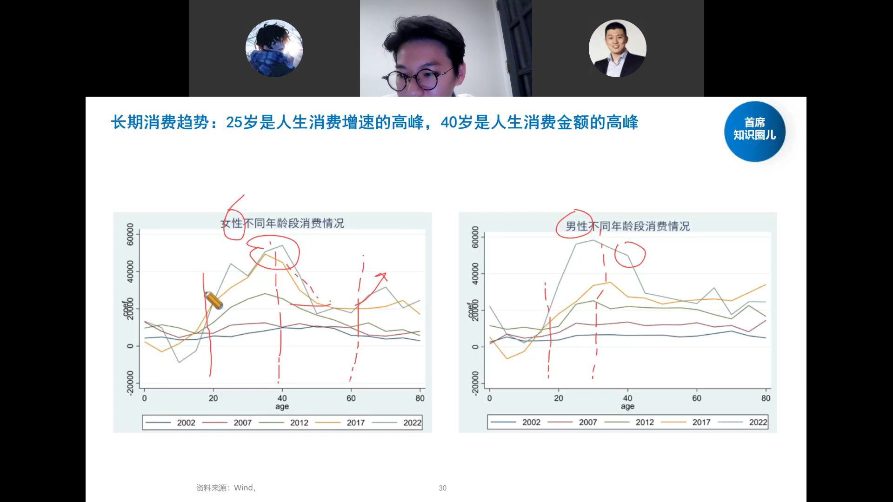
人生消费曲线有两个峰：25岁左右是消费增速最快的阶段（刚工作、结婚、生子，消费爆发式增长），40岁左右是消费金额绝对高峰（收入峰值、家庭支出最大）。这解释了为什么针对年轻人的品牌（增速快）和针对中年家庭的品牌（金额大）都有机会。
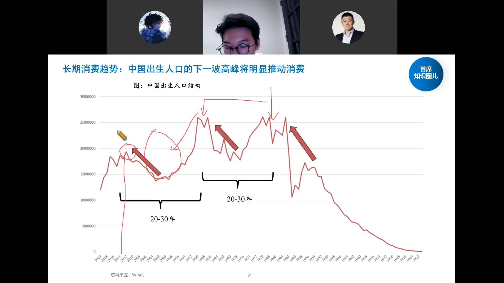
中国出生人口每20-30年一波高峰：1960s高峰→1980s高峰（婴儿潮回声）→2010s高峰。每波高峰人群在25岁时会推动一轮消费浪潮。当前2010s出生的人口正在进入消费主力年龄，下一波消费高峰已经在路上。
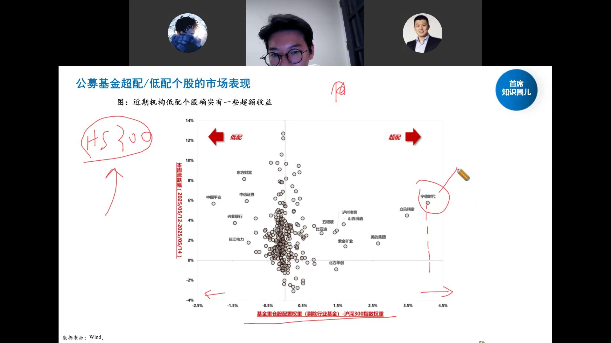
近期机构低配个股确实有一些超额收益：图中左侧（低配）的东方财富、中信证券、中国平安、兴业银行等本周涨幅靠前；右侧超配的宁德时代、立讯精密虽然也涨但波动大。在市场风格切换期，低配的金融/券商往往有补涨机会。
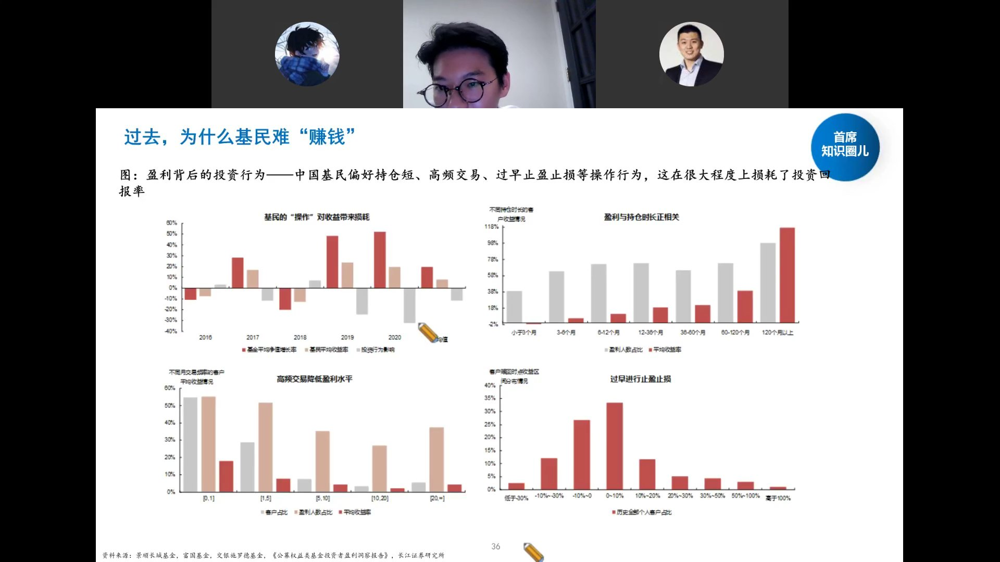
中国基民偏好持仓短、高频交易、过早止盈止损，这些行为在很大程度上损耗了投资回报率。数据显示：基金净值长期上涨，但基民平均收益率远低于基金本身——差距就是被频繁申赎、追涨杀跌磨损掉的。持仓越久盈利概率越高，高频交易的客户平均收益率最低。
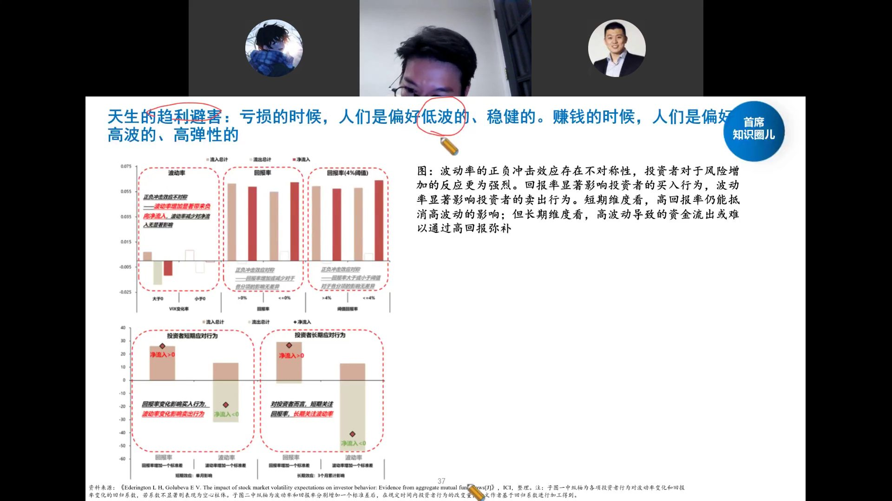
投资者对风险增加的反应更强烈：亏损时人们偏好低波、稳健；赚钱时偏好高波、高弹性。短期维度高回报率能抵消高波动，但长期看高波动导致的资金流出难以通过高回报弥补。这就是为什么"追高杀跌"是人之本性，也是基民亏钱的行为金融学根源。
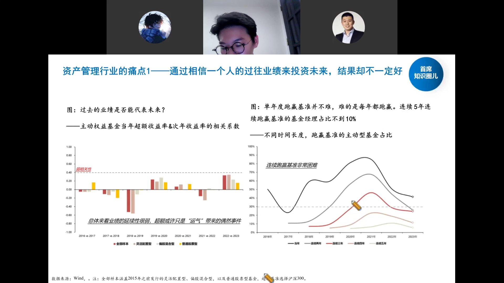
主动权益基金当年超额与次年超额的相关系数很弱，业绩延续性很弱，超额或许只是"运气"带来的偶然事件。单年度跑赢基准不难，难的是每年都跑赢——连续5年跑赢基准的基金经理占比不到10%。
启示：不要根据过去一两年的业绩排名去选基金经理，那大概率是运气而非能力。
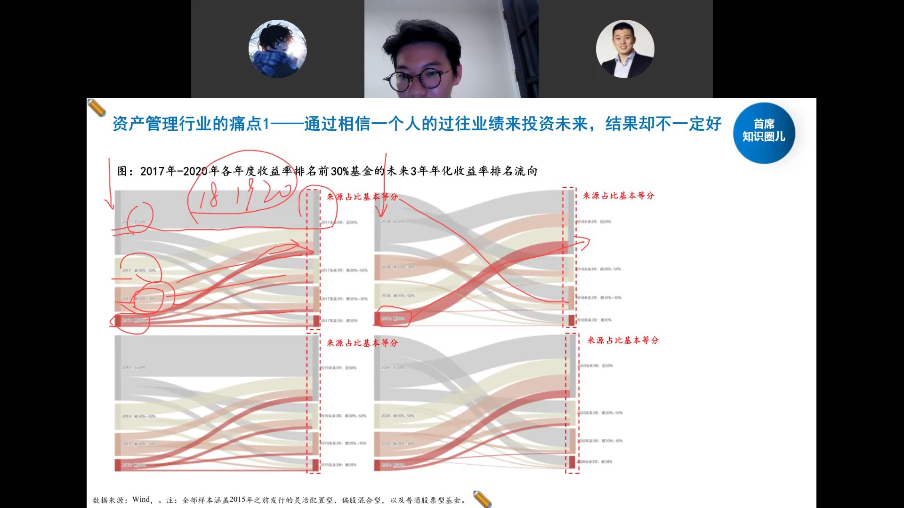
桑基图显示：每年收益排名前30%的基金，未来3年的排名流向来源占比基本等分——也就是说今年的冠军，未来3年变成冠军、中游、垫底的概率几乎一样。这进一步印证了"过往业绩不代表未来"。
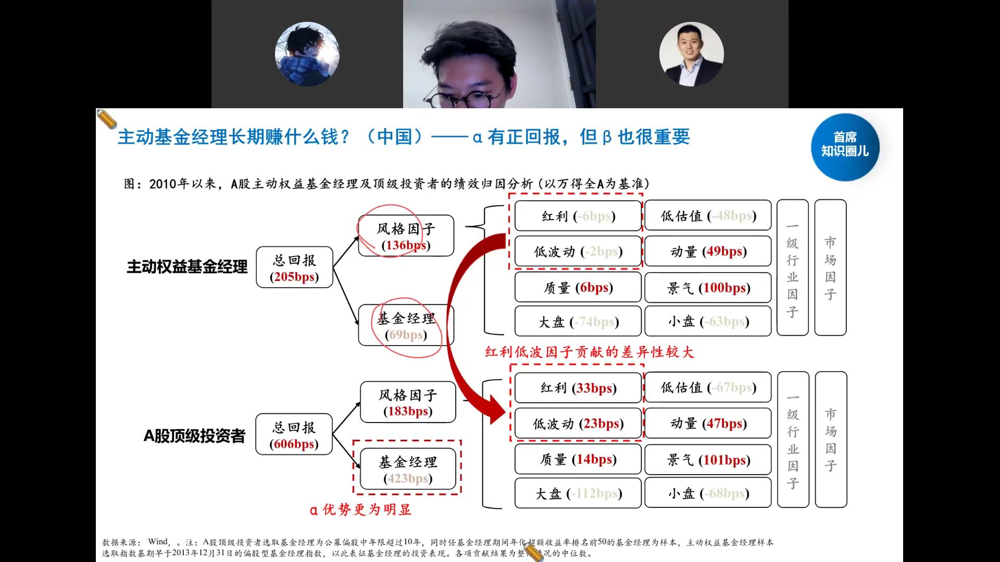
2010年以来A股主动权益基金经理绩效归因：总回报205bps中，风格因子贡献136bps，基金经理α仅69bps。而真正的顶级投资者（从业超10年、年化超额前50）总回报606bps，其中α高达423bps，α优势明显。
结论：普通主动基金经理大部分收益来自风格β（景气100bps、动量49bps），真正的α很少；只有极少数顶级投资者才有持续的α能力。
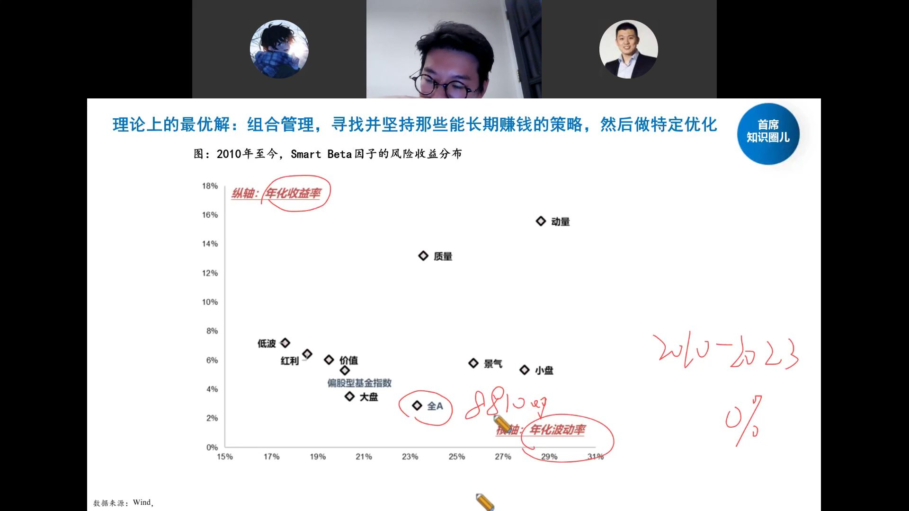
2010年至今各Smart Beta因子的风险收益分布：动量因子年化收益最高（约15.7%）但波动也大；质量因子13.4%；低波、红利、价值在7%左右、波动低；全A仅3%。单一因子都有周期性，关键是找到长期能赚钱的因子并组合起来。
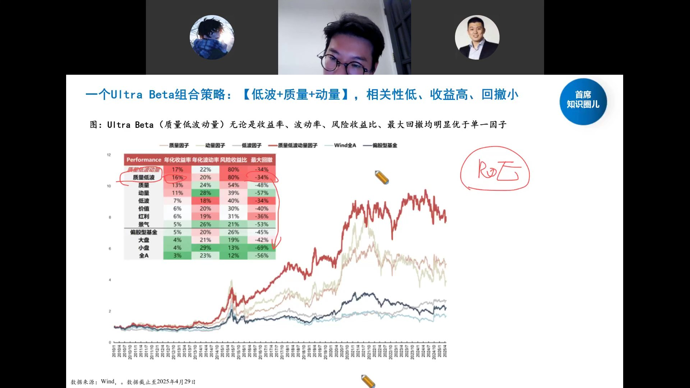
把低波、质量、动量三个相关性低的因子组合起来，效果显著优于单一因子：质量低波动量组合年化收益17%，年化波动22%，风险收益比（夏普）80%，最大回撤仅-34%——优于单一质量（13%/-48%）、单一动量（11%/-57%）、单一低波（7%/-34%），也远好于偏股型基金指数（5%/-45%）和全A（3%/-56%）。
超额收益的基本策略落点：不要赌单一基金经理的过往业绩，不要频繁交易，而是用"低波+质量+动量"这类多因子组合，获取长期稳健的β+弱α收益。相关性低的因子组合起来，才能在控制回撤的同时提高长期收益。